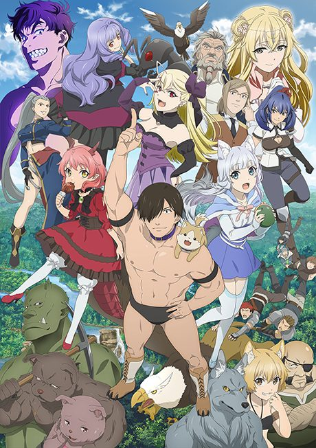
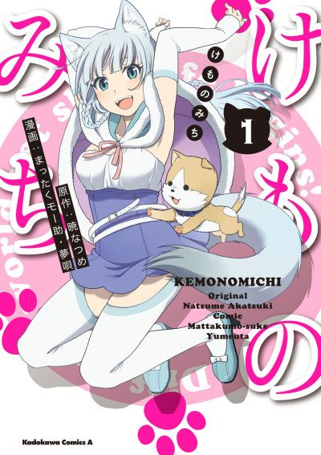
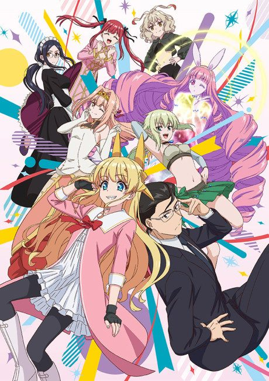

Kemono Michi: Rise Up
旗揚！けものみち
Genzou, a wrestler who loves animals, is summoned to another world to fight beasts. He suplexes the princess and opens a pet shop instead.
We haven't found where the anime ends in the manga yet.
6.4AniList score
—Animeter, no votes yet
12episodes
Rate it or report where you stopped
Is it worth pushing through?
Built from what visitors report across all 12 episodes.
Loading reports…Checking what other people said about this one.
Sign in above with your email to add your report.
More like Kemono Michi: Rise Up
 Manga Ch. 406.7
Manga Ch. 406.7
 Unclear7.2
Unclear7.2
 Manga Vol. 67.5
Manga Vol. 67.5
 Original7.2
Original7.2

Manga Ch. 707.0 VN7.2
VN7.2
 Unclear6.8
Unclear6.8
 Manga Vol. 78.3
Manga Vol. 78.3
 Unclear8.2
Unclear8.2
 Original7.2
Original7.2
 Manga Vol. 58.1
Manga Vol. 58.1
 Manga Ch. 507.4
Manga Ch. 507.4